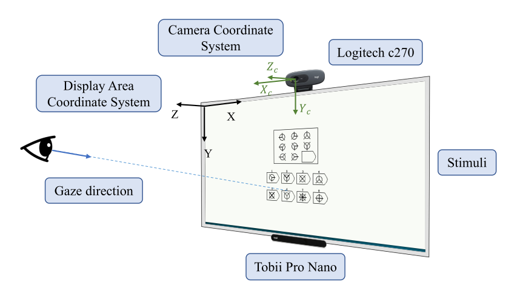
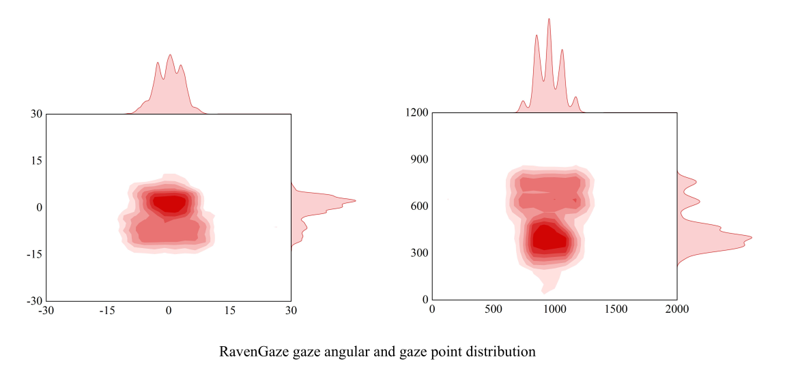

Stimuli and Experiment
We use the Raven's Advanced Progressive Matrices as a visual stimulus for the participants, containing 48 reasoning questions.
The experiment is shown in the Fig:

Participants have 15 seconds to answer each question within the answering time, they need to press the key corresponding to
the question option preset in the program to complete the question, and then automatically enter the answering link of the
next question. After all 48 reasoning questions are answered, the experiment ends.We simultaneously record the participants'
facial video, screen content video, and eye gaze data during question answering. In addition, we mark the time stamps and
frame sequences at the beginning and end of each question, which can be used to segment the video and eye gaze data to form
participants' independent data about each question.
Dataset Summary
In the RavenGaze dataset from 34 participants, 18 women and 16 men, 22 wear glasses during the experiment and 12 do not.
Data are collected under well-lighted indoor conditions. The answering time of each participant is 8 to 11 minutes.
Excluding the data of 3 participants due to incomplete data, the total duration of the facial video in the entire dataset
is 309 minutes (30Hz), with a total of 556,476 frames of facial images. And the resolution of each face image is 640×480.

The angle range of the horizontal direction is (-14°, +13°), and the angle of the vertical direction is (-13°, 10°).
Download
References